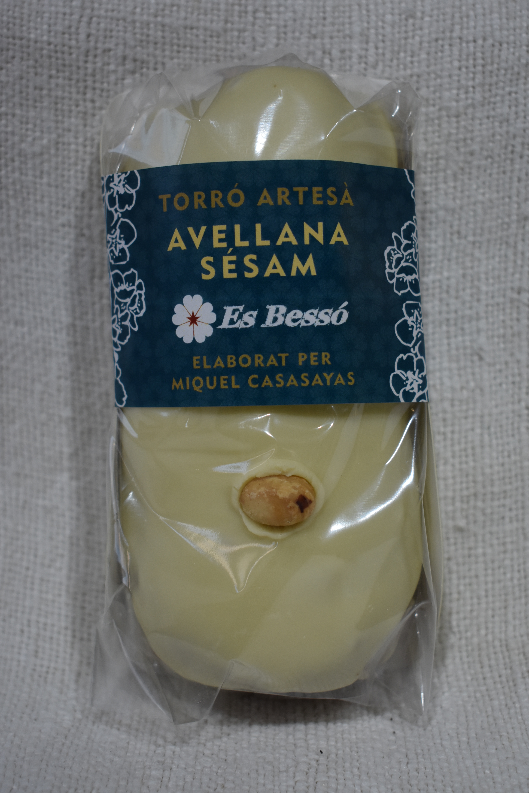
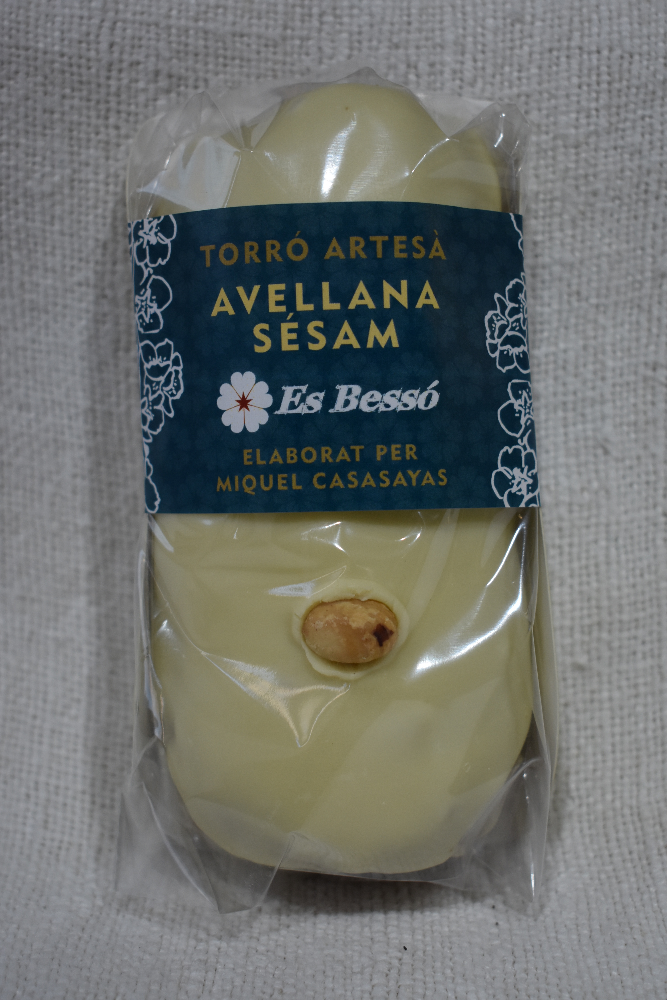

Nuestros turrones forman parte de aquellos que se fabrican en algunas pastelerías de Mallorca. Desde hace varias generaciones la familia Casasayas ha fabricado este producto, que se diferencia del turrón alicantino en la forma y la textura. El clásico tiene una forma rectangular, mientras que el nuestro es cilíndrico y redondeado en los extremos. Por otra parte, aquel, en sus dos variedades, jijona y alicante, tiene una textura terrosa y dura respectivamente. El nuestro está concebido originalmente para venta a granel y venía muy bien que fuera algo más cremoso para facilitar el corte. No obstante, al menos en Cataluña existen turrones parecidos de textura blanda, pero de forma rectangular.
- Almendra tostada con naranja confitada: Veraniego, fresco y potente a la vez.
- Almendra tostada: Tiene el mismo sabor del turrón prensado casero a base de almendra y azúcar. Aunque el nuestro es de textura más cremosa y no resulta aceitoso.
- Almendra tostada con un toque de sal: A veces un pequeño ingrediente produce un cambio importante en un sabor. La sal consigue ese efecto haciendo un turrón más redondo e intenso.
- Mazapán de almendra con nueces y chocolate blanco: Mezclamos sabores suaves para que sepa a gloria. El secreto es tostar ligeramente las nueces.
- Avellana con sésamo y chocolate blanco: Los tostados de avellana y sésamo se potencian. Mastica las semillas de sésamo y notarás un intenso aroma. El chocolate blanco suaviza y contrasta este turrón.
- Avellana con sésamo: También lo tenemos sin chocolate blanco.
- Trufa belga: Esta mousse está hecha (como las demás trufas) con chocolate belga. Contiene además, agua y aceite de oliva virgen extra. Cremoso, fundente y sin sabores lácteos.
- Trufa con gin Xoriguer: ¿Qué mejor licor que el Gin Xoriguer? Es un homenaje a mi padre y maestro Montserrat Casasayas. El Gin destaca por su aroma ácido.
- Trufa con naranja: El sabor ácido de la naranja combina perfectamente con el amargo del cacao. Contiene trocitos de naranja confitada por nosotros mismos.
- Yema tostada: Es un turrón fino y delicado. Adecuado con un té. El azúcar se tuesta para darle un toque amargo.


 



Fabricamos mermeladas pensando en frutas de kilómetro cero, en la misma isla. Tenemos naranja, albaricoque, higos con canela... las fabricamos de forma tradicional y también sin azúcares añadidos, en cuyo caso sólo contienen el azúcar propio de la fruta. Procuramos no cocer mucho la fruta para que conserve su sabor original. También añadimos puro zumo de nuestro inacabable limonero. Así ayudamos a preservar la mermelada de microorganismos y además mantiene el color de la fruta. Para no espesarla a base de azúcar y cocción, añadimos pectina de frutas, la solución más utilizada en la mayoría de mermeladas. Ni que decir tiene que toda la fruta que utilizamos es fresca. Ni precongelada ni predeshidratada. La teneis normalmente en formato de 250gramos, pero algunas también están en 400g.
Las almendritas que veis las compramos a almacenes con la garantía de que están recogidas en las islas. Al llegar a nuestro local, las tostamos y enseguida les damos el sabor correspondiente y las envasamos para que no pierdan sabor ni textura. Podeis escoger entre los sabores de romero con otras hierbas, pimentón dulce, pimentón picante, azúcar y sal, limón... Se trataba de hacer un snack algo diferente que la típica con sal. Seguiremos innovando con sabores nuevos. En nuestro facebook podeis sugerirnos aquello que se os ocurra.
Para una correcta vizualización de la página web usa Google Chrome.
Aviso legal: Miquel Casasayas Talens, ES BESSÓ - NIF 43.061.058k - núm. registro sanitario: 23003679/ib
c/Santa Catalina n.72 - 07110 - Bunyola - Baleares - 653 92 97 33 - info@esbesso.com